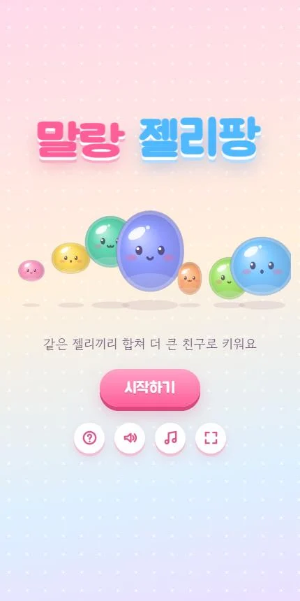
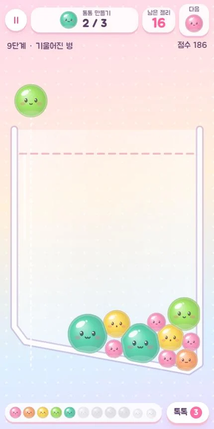
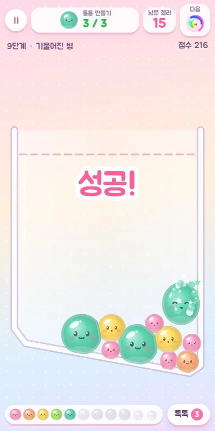
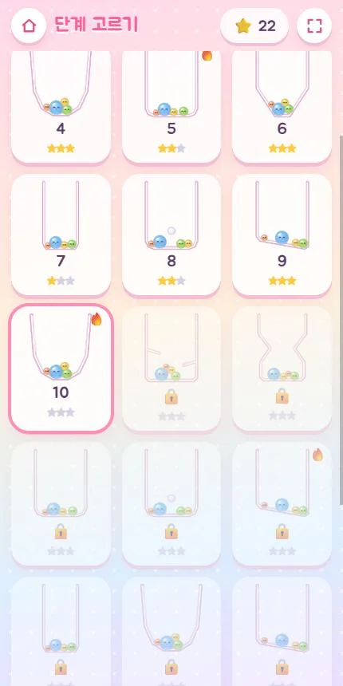

🧩 퍼즐 게임 · 무료 · 설치 없음
말랑 젤리팡
“같은 젤리끼리 합쳐 더 큰 친구로!”
- 한 단계 2~5분
- 병 모양 8가지
- 젤리 친구 11단계
- 진행 자동 저장
회원가입 없이 누르면 바로 시작돼요
어떤 게임인가요?
콩콩, 방울, 몽이, 말랑… 이름처럼 말랑말랑한 젤리 친구들이 유리병 속에서 기다려요. 병 위에서 젤리를 떨어뜨려 같은 친구끼리 만나게 하면 「퐁」 하고 한 단계 큰 친구로 변신해요.
단계마다 목표가 있어요. 「몽이 3개 만들기」, 「통통 1개 만들기」처럼 정해진 젤리 개수 안에 목표를 채우면 성공이에요. 둥근 컵, 넓은 그릇, 좁은 꽃병, 깔때기, 가운데 기둥, 기울어진 바닥, 선반, 모래시계까지 병 모양이 바뀔 때마다 쌓는 방법도 달라져요.
젤리는 쌓이면 맞닿은 면이 납작하게 눌리고, 부딪히면 출렁여요. 합칠 때마다 음이 조금씩 높아지는 「퐁」 소리와 오르골 배경음이 함께해요.
이렇게 해요
- STEP 1
자리를 골라 떨어뜨려요
병 위를 손가락으로 좌우로 끌어 자리를 정하고, 손을 떼면 젤리가 떨어져요.
- STEP 2
같은 젤리끼리 합쳐요
같은 젤리 둘이 닿으면 한 단계 큰 친구가 돼요. 큰 친구를 만들수록 떨어지는 젤리도 조금씩 커져요.
- STEP 3
목표를 채워요
남은 젤리 안에 목표를 채우면 성공! 젤리가 많이 남을수록 별을 더 받아요.



🌟 이런 것도 있어요
- 얼음 젤리: 6단계부터 병에 들어 있고, 옆에서 합치기가 일어나야 녹아요
- 무지개 사탕: 일곱 번 합칠 때마다 와서, 닿은 젤리를 한 단계 올려 줘요
- 톡톡 흔들기: 단계마다 세 번, 병을 출렁여 젤리 자리를 바꿔요
- 다섯 단계마다 🔥 어려운 판, 무지개 젤리 둘이 만나면 하늘로 날아가며 3000점
단계는 끝없이 이어지고, 갈수록 목표가 커져요.
이런 분께 추천해요
- 짧게 한 판씩 머리를 식히고 싶은 분
- 귀엽고 말랑한 캐릭터를 좋아하는 분
- 가족이 돌아가며 별 세 개에 도전해 보고 싶은 분
젤리가 병 위 점선을 넘은 채 2초 넘게 머물면 병이 넘쳐요. 같은 젤리를 한쪽에 모아 두고, 막히면 「톡톡」으로 병을 흔들어 보세요.
📱 어떤 기기에서 하면 좋을까요?
- 가장 좋아요휴대폰 세로 화면
끌고 떼기만 하면 돼서 한 손으로도 편해요. 시작하기를 누르면 전체 화면으로 바뀌어요.
- 가장 좋아요태블릿 가로·세로 모두
병이 크게 보여요. 가로로 두면 목표와 진화표가 왼쪽에 모여요.
- 좋아요컴퓨터·노트북 마우스
마우스를 움직여 자리를 고르고 클릭하면 젤리가 떨어져요.
오른쪽 위 메뉴(⋮ 또는 ···)에서 「다른 브라우저로 열기」를 눌러 크롬이나 사파리로 열어 주세요. 앱 안에서는 전체 화면이 안 되고 저장이 풀릴 수 있어요.
🍎 아이폰·아이패드에서는
- ① 사파리로 열기
카카오톡이나 네이버 앱 안에서는 화면이 좁아요. 「다른 브라우저로 열기」나 사파리로 열어 주세요.
- ② 홈 화면에 추가하기
아이폰은 전체 화면 버튼이 동작하지 않아요. 공유 버튼(□↑) → 「홈 화면에 추가」로 열면 주소창 없이 꽉 찬 화면이 돼요. 아이패드는 시작하기를 누르면 전체 화면이 돼요.
- ③ 소리
무음 스위치가 켜져 있으면 소리가 나지 않아요. 효과음과 오르골 배경음은 화면의 버튼으로 따로 켜고 끌 수 있어요.
🤖 갤럭시 등 안드로이드에서는
크롬이나 삼성 인터넷으로 열고 시작하기를 누르면 전체 화면으로 바뀌어요. 큰 젤리가 합쳐질 때 짧게 진동해요.
▶ 바로 해 보기
설치도, 회원가입도 필요 없어요.
말랑 젤리팡 시작하기game.edoori.co.kr/jellypang/